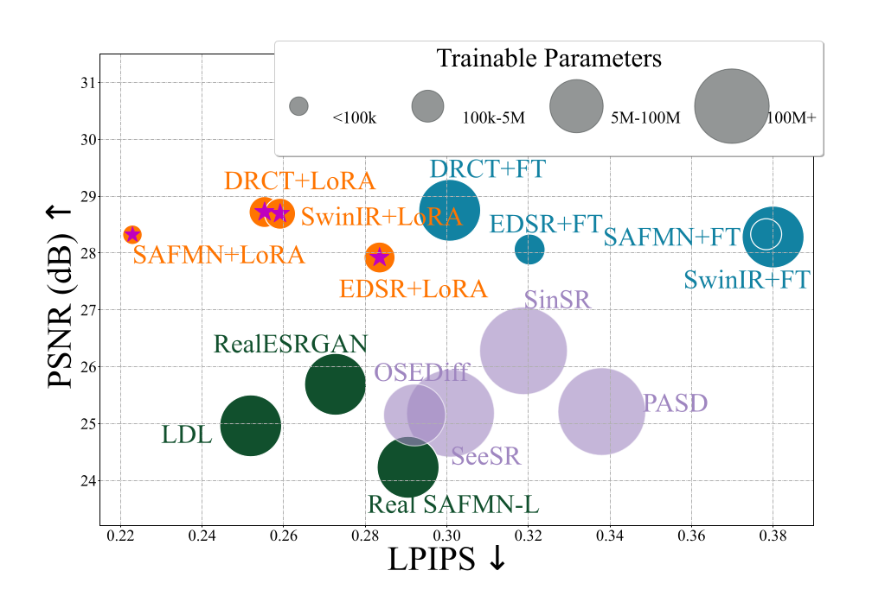

AdaptSR: Rank-Aware Low-Rank Adaptation for Real-World Super-Resolution
Authors: Cansu Korkmaz, Nancy Mehta, Radu Timofte
Venue: (Under Review) the Fourteenth International Conference on Learning Representations (ICLR), April 2026
Overview
AdaptSR presents a rank-aware low-rank adaptation method specifically designed for real-world super-resolution scenarios. The approach enables efficient model adaptation with improved performance by intelligently selecting and adapting low-rank components based on their importance for the task at hand.
Key Contributions
- Rank-aware adaptation strategy for super-resolution
- Efficient parameter adaptation for real-world scenarios
- Improved performance with reduced computational overhead